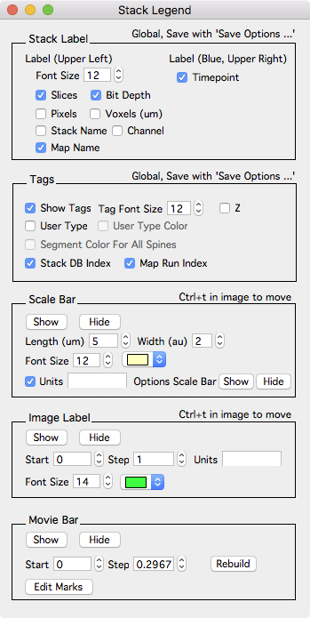

Stack Legend

The stack legend window allows stack labels (upper left of stack window), annotation tags, and additional elements to be displayed on top of a stack window.
Open the stack legend window as follows:
- Right-click a stack and select menu ‘Windows - Stack Legend’.
-
Click 'Stack Legend' button in the 'Plot' tab of the annotation toolbar. For any stack window, open annotation toolbar using keyboard [. - Open the buttons panel (map manager - buttons) and click ‘Stack Legend’.
Stack Label
The stack label is always in the upper left of a stack window. These are global options and will apply to all stack windows and can be saved with ‘Map Manager - Save Options…’.
- Font Size. Set the font size of the stack label.
- Slices. Display the current slice and total number of slices.
- Bit Depth. Display the stack bit depth.
- Pixels. Display the stack pixels.
- Voxels (um). Display the stack scale in um.
- Stack Name. Display the stack name (this is the original file name).
- Channel. Display the channel number.
- Map Name. Display the map name.
Tags
Control how annotations are tagged. These are global options and will apply to all stack windows and can be saved with ‘Map Manager - Save Options…’.
- Show Tags. Hide and show annotation tags.
- Tag Font Size. The font size of tags (font size 12 is the default).
- Z. Hide and show the Z image plane.
- User Type. Hide and show user type 1..9.
- ** User Type COlor**. Not used.
- Segment Color For All Spines. Not used.
- Stack DB Index. Hide and show the stack centric stack index. For single time point analysis, this is all that is needed.
- Map Run Index. Hide and show time series (map) centric indices.
Scale Bar
Append a custom scale bar to a stack window. This is useful to make final figures to be copied/pasted into another program. This is a local option and will only apply to the current stack window. Use show/hide buttons to show and hide the custom scale bar. The length (um), width (Au), color, and font size of units can be adjusted. When using this scale bar, be sure to turn off the global options scale bar with ‘Options Scale Bar Hide’ button.
To move the scale bar in the stack window, use keyboard ‘ctrl+t’ (in the stack window) and drag it around.
Image Label
Append a custom slice/frame annotation to a stack window. This is useful to display the current depth in a z-stack or the current time of a frame in a time series.
The start, step, units, font size, and color can be specified.
To move the image label in the stack window, use keyboard ‘ctrl+t’ (in the stack window) and drag it around.
Movie Bar
The movie bar displays a graph of the current frame as the stack is scrolled. This is most useful for time series stacks to show the progress of the stack.
- Edit Marks. Is an interface to denote events within a time series.
The movie bar can not be moved. It is always at the bottom of a stack window.
Example
Here is an example of a ‘Scale Bar’ in the lower right and an ‘Image Label’ in the upper right. This movie was exported from Map Manager using the ‘Buttons Panel - Stack Tab - Export Movie’.
|
Stack Legend Example |